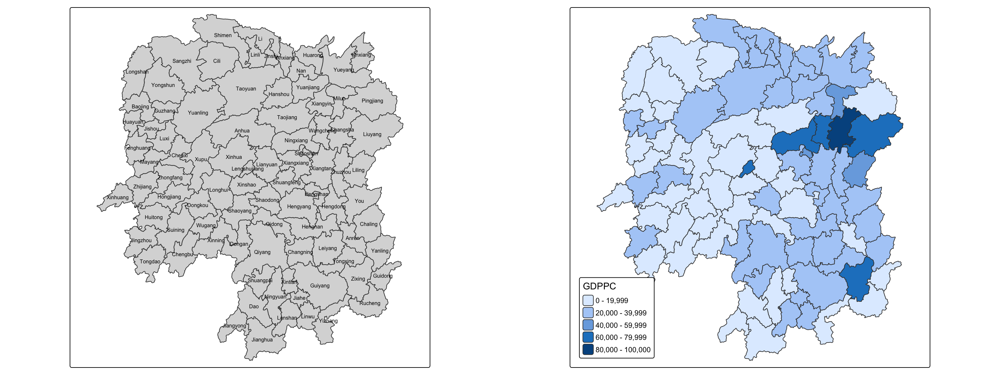
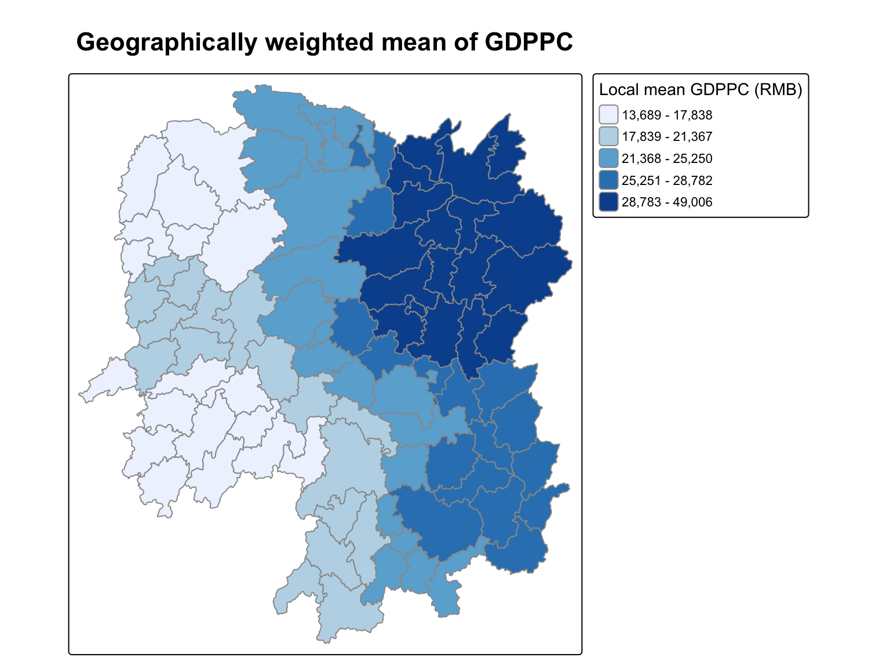
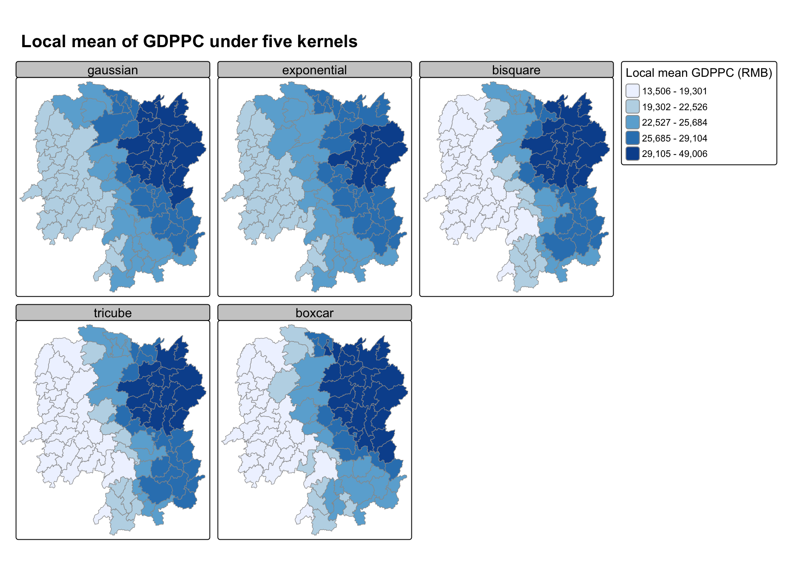

pacman::p_load(sf, spdep, tmap, tidyverse, knitr, GWmodel, ggstatsplot)In-class Exercise 4
Geographically Weighted Summary Statistics
88 counties of Hunan, GDP per capita 2012 Hunan shapefile, Hunan_2012.csv sf spdep tmap tidyverse knitr GWmodel ggstatsplot
1 Overview
Hands-on Exercise 4 built spatial weights for the 88 counties of Hunan. This in-class exercise uses the same data for a different question. Geographically weighted summary statistics do not give one number for the whole province. They give every county its own local mean, standard deviation and so on, computed from nearby counties and weighted by distance.
2 Loading the Packages
GWmodel is the new package. It computes the geographically weighted statistics and chooses the bandwidth. sf, spdep, tmap and tidyverse do the same jobs as in the hands-on exercises. knitr and ggstatsplot are on the list given in class.
3 Preparing the Data
There are three steps. I read the boundaries, read the indicators, then join them and keep the columns I need.
st_read() of sf reads the county boundaries into an sf polygon object.
hunan <- st_read(dsn = "data/geospatial", layer = "Hunan")Reading layer `Hunan' from data source
`/Users/czxtom/Documents/Programming/GAA/ISSS626-GAA/In-class_Ex/In-class_Ex04/data/geospatial'
using driver `ESRI Shapefile'
Simple feature collection with 88 features and 7 fields
Geometry type: POLYGON
Dimension: XY
Bounding box: xmin: 108.7831 ymin: 24.6342 xmax: 114.2544 ymax: 30.12812
Geodetic CRS: WGS 84read_csv() of readr reads the 2012 indicators into a tibble.
hunan2012 <- read_csv("data/aspatial/Hunan_2012.csv")left_join() of dplyr attaches the indicators to the polygons by the shared County column. select() keeps NAME_2, ID_3, NAME_3, County, GDPPC, GIO, Agri and Service. After the join these are at positions 1 to 3, 7, 15, 16, 31 and 32.
hunan_sf <- left_join(hunan, hunan2012) %>%
select(1:3, 7, 15, 16, 31, 32)4 Mapping GDPPC
qtm() of tmap draws the choropleth in one line, next to a reference map with the county names. tmap_arrange() places the two side by side. The legend is outside the map so it does not cover any county.

basemap <- tm_shape(hunan_sf) +
tm_polygons(fill = "#F7F4EC", col = "grey60") +
tm_text("NAME_3", size = 0.6,
options = opt_tm_text(remove_overlap = TRUE)) +
tm_title("Hunan, 88 counties", size = 1.3, fontface = "bold")
gdppc <- qtm(hunan_sf, "GDPPC",
fill.legend = tm_legend(title = "GDP per capita (RMB)",
position = tm_pos_out("right", "center"))) +
tm_title("GDP per capita, 2012", size = 1.3, fontface = "bold")
tmap_arrange(basemap, gdppc, ncol = 2)5 Converting to SpatialPolygonDataFrame
NoteLearning diary
GWmodel still uses the older sp classes, not sf. So I have to convert the data before any GWmodel function will accept it.
as_Spatial() of sf converts the sf object into an sp SpatialPolygonsDataFrame.
hunan_sp <- hunan_sf %>%
as_Spatial()6 Geographically Weighted Summary Statistics with Adaptive Bandwidth
6.1 Determining the Adaptive Bandwidth
bw.gwr() of GWmodel searches for the bandwidth. With adaptive = TRUE the bandwidth is a number of nearest neighbours, not a distance. GDPPC ~ 1 means there is no explanatory variable, only the variable being summarised. The two tabs choose the bandwidth by cross-validation and by AICc.
bw_CV <- bw.gwr(GDPPC ~ 1,
data = hunan_sp,
approach = "CV",
adaptive = TRUE,
kernel = "bisquare",
longlat = T)Adaptive bandwidth: 62 CV score: 15515442343
Adaptive bandwidth: 46 CV score: 14937956887
Adaptive bandwidth: 36 CV score: 14408561608
Adaptive bandwidth: 29 CV score: 14198527496
Adaptive bandwidth: 26 CV score: 13898800611
Adaptive bandwidth: 22 CV score: 13662299974
Adaptive bandwidth: 22 CV score: 13662299974 bw_CV[1] 22bw_AIC <- bw.gwr(GDPPC ~ 1,
data = hunan_sp,
approach = "AIC",
adaptive = TRUE,
kernel = "bisquare",
longlat = T)Adaptive bandwidth (number of nearest neighbours): 62 AICc value: 1923.156
Adaptive bandwidth (number of nearest neighbours): 46 AICc value: 1920.469
Adaptive bandwidth (number of nearest neighbours): 36 AICc value: 1917.324
Adaptive bandwidth (number of nearest neighbours): 29 AICc value: 1916.661
Adaptive bandwidth (number of nearest neighbours): 26 AICc value: 1914.897
Adaptive bandwidth (number of nearest neighbours): 22 AICc value: 1914.045
Adaptive bandwidth (number of nearest neighbours): 22 AICc value: 1914.045 bw_AIC[1] 22
NoteLearning diary
Both approaches give the same answer, 22 nearest neighbours for CV and 22 for AICc. So each county’s local statistics use about a quarter of the province. longlat = T is needed because the data is still in WGS 84. So distances have to be great circle distances in kilometres.
6.2 Computing Geographically Weighted Summary Statistics
gwss() of GWmodel computes the geographically weighted summary statistics. It uses the adaptive bandwidth chosen by AICc above and the bisquare kernel.
gwstat <- gwss(data = hunan_sp,
vars = "GDPPC",
bw = bw_AIC,
kernel = "bisquare",
quantile = TRUE,
adaptive = TRUE,
longlat = T)6.3 Preparing the Output Data
NoteLearning diary
With quantile = TRUE, gwss() computes eight local statistics for each county. These are the local mean, standard deviation, variance, skewness, coefficient of variation, median, interquartile range and quantile imbalance. They are returned in gwstat$SDF, a SpatialPolygonsDataFrame, with column names such as GDPPC_LM for the local mean.
as.data.frame() takes the attribute table out of gwstat$SDF for mapping.
gwstat_df <- as.data.frame(gwstat$SDF)cbind() then adds those columns to hunan_sf. The rows are in the same county order, so no join key is needed.
hunan_gstat <- cbind(hunan_sf, gwstat_df)6.4 Visualising Geographically Weighted Summary Statistics
tm_shape() and tm_polygons() of tmap map the local mean with quantile classes.

tm_shape(hunan_gstat) +
tm_polygons(fill = "GDPPC_LM",
fill.scale = tm_scale_intervals(
style = "quantile",
n = 5,
values = "brewer.blues"),
fill.legend = tm_legend(
title = "Local mean GDPPC (RMB)",
position = tm_pos_out("right", "center")),
col = "grey60") +
tm_title("Geographically weighted mean of GDPPC", size = 1.5, fontface = "bold")6.5 Comparing the Five Kernels
gwss() supports five kernels, gaussian, exponential, bisquare, tricube and boxcar. The lesson asked me to repeat the chunk above with each kernel and compare the maps. sapply() runs gwss() once per kernel with the same adaptive bandwidth and keeps only the local mean. pivot_longer() of tidyr stacks the five results, so tm_facets() can draw one small map per kernel on one shared scale.
kernels <- c("gaussian", "exponential", "bisquare", "tricube", "boxcar")
kernel_lm <- sapply(kernels, function(k) {
gwss(data = hunan_sp,
vars = "GDPPC",
bw = bw_AIC,
kernel = k,
adaptive = TRUE,
longlat = T)$SDF$GDPPC_LM
})
hunan_kernels <- cbind(hunan_sf, as.data.frame(kernel_lm)) %>%
pivot_longer(cols = all_of(kernels),
names_to = "kernel",
values_to = "local_mean") %>%
mutate(kernel = factor(kernel, levels = kernels))
tm_shape(hunan_kernels) +
tm_polygons(fill = "local_mean",
fill.scale = tm_scale_intervals(
style = "quantile",
n = 5,
values = "brewer.blues"),
fill.legend = tm_legend(
title = "Local mean GDPPC (RMB)",
position = tm_pos_out("right", "center")),
col = "grey60") +
tm_facets(by = "kernel", ncol = 3, free.coords = FALSE) +
tm_layout(panel.label.size = 1.2) +
tm_title("Local mean of GDPPC under five kernels", size = 1.3, fontface = "bold")The five maps share one set of quantile classes, so the same shade means the same local mean in every panel.
The Changsha block in the north-east is in the darkest class under all five kernels, so the main pattern does not depend on the kernel. What changes is how sharp the contrast looks. Bisquare, tricube and boxcar give zero weight beyond the 22nd nearest neighbour. So the western counties only average other poor western counties and drop into the lowest class. Gaussian and exponential never quite reach zero, so every county takes a little from the whole province. The west is one class higher and the map is flatter.
NoteLearning diary
The kernel matters less than the bandwidth, but it still has some effect. With a bounded kernel the bandwidth is a real cut-off. With Gaussian or exponential it only sets how fast the weight fades. The bandwidth of 22 was chosen with bisquare, so it is only the best bandwidth for bisquare. A fair comparison would rerun bw.gwr() for each kernel first.